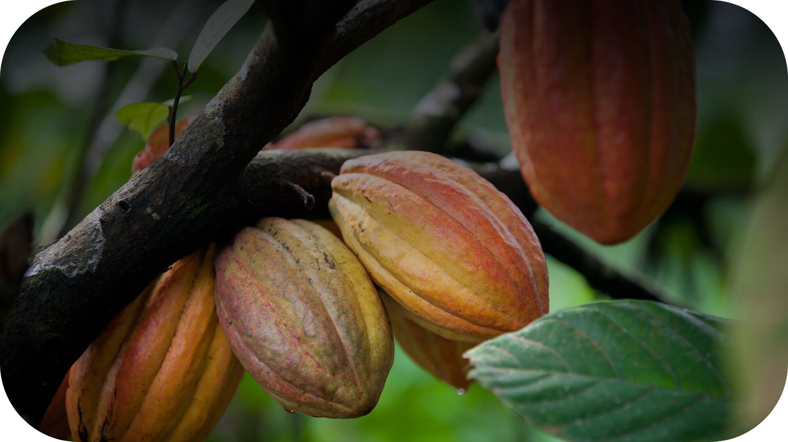
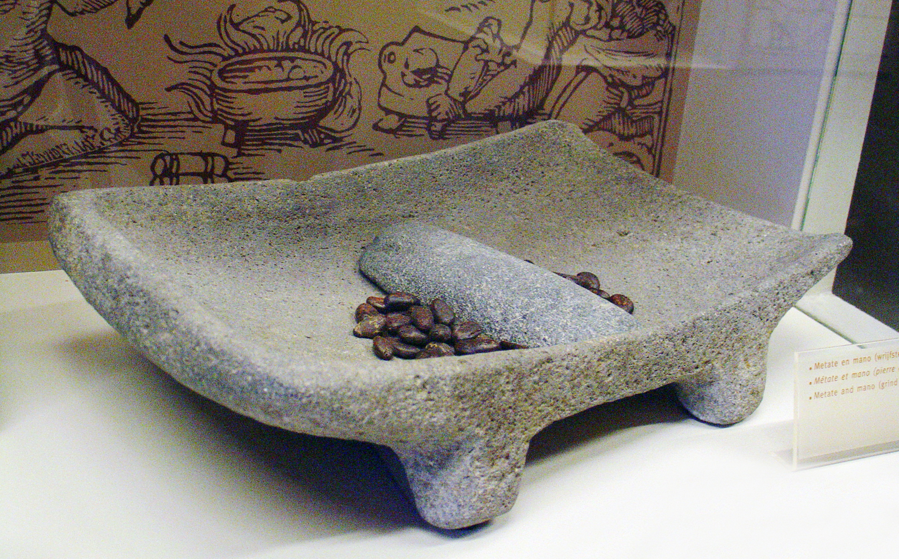
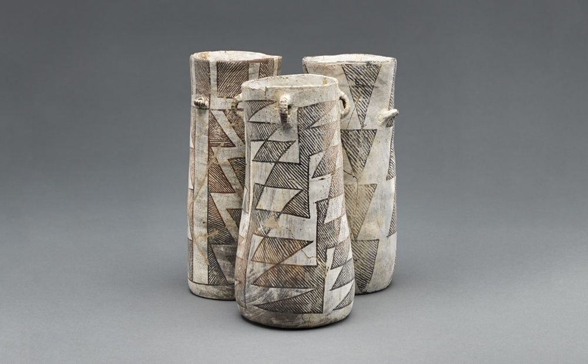
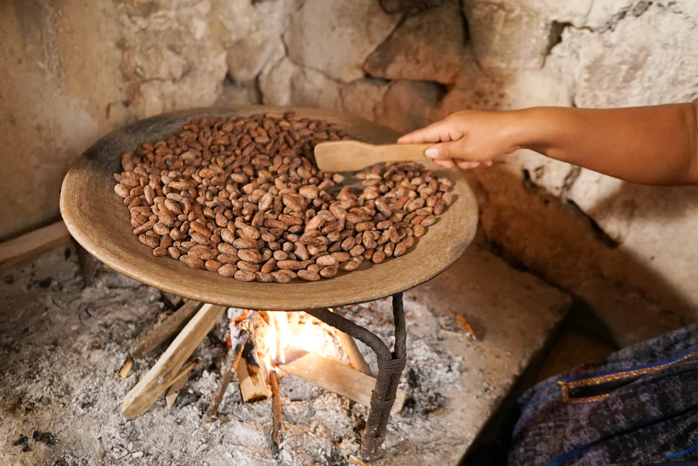

Ancient Stone Tools to Artificial Intelligence
Technology has reshaped cacao production from its earliest beginnings, evolving from hand‑carved stone tools and fire‑pit roasting into a system driven by automation, sensing, and intelligent decision‑making. What began as a fully manual craft practiced by Mesoamerican cultures has grown into a global industry supported by optical sorters, robotic pollinators, IoT field sensors, and AI models that grade beans and forecast supply‑chain disruptions. Each stage of the value chain has been touched by innovation, gradually replacing guesswork with precision and enabling farmers, processors, and manufacturers to produce higher‑quality chocolate with greater consistency and sustainability.

Ancient innovations that shaped the art of cacao preparation

Flat grinding stones used by Maya and Aztec civilizations to crush roasted cacao beans into a coarse paste.

Tall, spouted pots used for frothing and serving cacao drinks during sacred rituals, pouring from height to create the prized foam layer.

Open-flame clay hearths used to roast raw cacao beans over carefully tended fires, developing the rich flavor compounds essential to chocolate's taste.
Hand-carved wooden whisks spun rapidly between the palms to create the prized frothy texture in cacao beverages, a technique still used today.
Traditional Cacao Processing: A centuries-old pipeline of hand labor and natural processes that transforms raw cacao pods into rich, aromatic chocolate paste.
Harvesting
Harvesting
Cacao pods hand-cut from trees with machetes at peak ripeness.
Fermentation
Fermentation
Beans piled in wooden boxes, covered with banana leaves for 5-7 days.
Sun Drying
Sun Drying
Beans spread on mats under direct sunlight for 1-2 weeks.
Hand Sorting
Hand Sorting
Workers manually inspect and remove defective or moldy beans.
Roasting & Grinding
Roasting & Grinding
Beans roasted over fire, then ground by hand with stone tools.
The Age of Machines
Netherlands
Van Houten's Cocoa Press
Coenraad Van Houten invented the hydraulic press to separate cocoa butter from cocoa solids, enabling mass production of cocoa powder.
England
First Chocolate Bar
Joseph Fry created the first modern chocolate bar by recombining cocoa powder, sugar, and melted cocoa butter into a moldable paste.
Switzerland
Conching Machine
Rodolphe Lindt developed the conche, which continuously mixed chocolate for hours, producing a smooth, velvety texture previously unachievable.
Global
Steam-Powered Roasters
Large-scale drum roasters replaced open-flame methods, enabling uniform roasting of tons of cacao beans per day with consistent quality.
1900s – 2000s
Automated conching machines reduced processing time from days to hours while maintaining texture quality.
Conveyor-based enrobers coated confections in uniform chocolate layers at industrial speed.
Atomizes liquid cocoa into fine powder for instant cocoa mixes and beverages.
Early digital controls enabled precise temperature and timing management in roasting and tempering.
Cold-chain logistics allowed global distribution of heat-sensitive chocolate products.
Factory Automation
Cutting-edge systems that bring unprecedented precision, speed, and consistency to every stage of production.
Real-Time
Supervisory control enables real-time monitoring of entire production lines from a single centralized dashboard.
Quality Visualized
Machine-vision color sorters process tons of beans per hour, using NIR and camera systems to detect and reject defects.
±0.5°C
Automated tempering machines control chocolate crystallization within half a degree for consistent snap and gloss.
End-to-End
Highly automated facilities handle every step with minimal human intervention.
Handle repetitive tasks like wrapping, labeling, and palletizing finished chocolate products alongside human workers.
AGVs autonomously transport raw cacao materials between processing stations, reducing manual handling and improving workflow efficiency.
Perform exact ingredient dosing, mixing, and chocolate molding with sub-millimeter accuracy for consistent product quality.
Robotic pollinators assist with the delicate hand-pollination of cacao flowers, aiming to boost pod set rates.
Survey plantation health from above, apply targeted pesticide sprays to affected areas, and map terrain for optimized farm management.
Automated pruning systems trim cacao trees to optimize canopy structure, improving sunlight exposure and maximizing pod yield.
Transparency & Precision
Wireless sensors monitor soil moisture, temperature, humidity, and rainfall across cacao farms in real time, enabling data-driven agronomy.
Remote sensing tracks deforestation, farm boundaries, and crop health at scale across cocoa-growing regions worldwide.
Immutable ledger technology traces every batch of beans from farm to finished product, verifying fair-trade and sustainability claims.
Smartphone apps connect smallholder farmers to market prices, weather forecasts, and best-practice agronomic advice.
Precision Agriculture
Multispectral & Hyperspectral Imaging
Cameras capture light beyond the visible spectrum to detect early signs of disease stress invisible to the human eye.
Convolutional Neural Networks (CNNs)
Deep learning models trained on thousands of leaf images classify diseases like black pod rot, swollen shoot virus, and frosty pod with over 90% accuracy.
LiDAR Canopy Mapping
3D laser scanning measures tree canopy volume and structure, identifying under-performing trees needing intervention.
Automated Pest Identification
AI-powered camera traps identify and count pest species such as cocoa pod borers, triggering targeted responses.
Drone-Based Surveys
UAVs equipped with multispectral cameras perform rapid whole-plantation health assessments in hours rather than weeks.
Intelligent systems that grade, inspect, forecast, and simulate
ML algorithms analyze bean size, color, moisture, and fermentation level from high-resolution images, grading beans consistently and faster than human inspectors.
Non-destructive scanning determines fat content, moisture, and contamination levels in seconds, integrated into production-line quality gates.
AI models analyze historical sales, seasonal trends, and market signals to predict demand, reducing overproduction and waste across the supply chain.
Virtual models of the entire supply chain simulate logistics scenarios, optimize routes, and anticipate disruptions before they occur.
Looking Ahead
From hand-carved stone tools to AI-powered quality control, technology has transformed every link in the cacao value chain. The next frontier promises to make chocolate production more sustainable, equitable, and delicious than ever.
Precision Fermentation
Lab-crafted cocoa flavors without deforestation.
Gene-Edited Resistance
Disease-proof trees for resilient harvests.
Autonomous Farms
Fully self-managing smart plantations.
© 2026, Andrea Dall'Ara. Some Rights Reserved